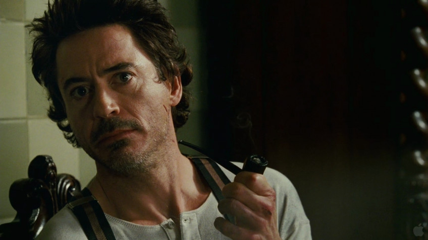

Новый фильм:Стрельцов

Александр Петров перевоплотился в известного советского футболиста, который уже в 19 лет отправился на Олимпиаду, а затем выиграл Кубок СССР. Однако в 1958 году ему было предъявлено ложное обвинение в изнасиловании, за которое он сел в тюрьму.
ПодробнееРоберт Дауни мл. хочет превратить «Шерлока Холмса» в киновселенную
Речь идёт о спин-оффах и других подобных проектах.
Подробнее